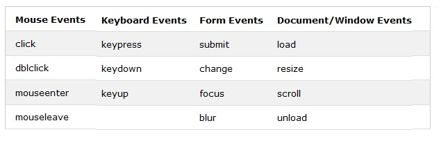

|
You are creating a page that contains detailed employee information for a company portal. The page
uses a jQuery library. The page contains a button named btnEdit that is defined by the following code. ExplicaciónjQuery está hecho a medida para responder a eventos en una página HTML. All the different visitors' actions that a web page can respond to are called events. An event represents the precise moment when something happens. Aquí hay algunos de los eventos comunes del DOM: Lo que buscamos en el ejercicio es un evento para un efecto. Una lista de todos los efectos se puede ver en
https://www.w3schools.com/jquery/jquery_ref_effects.asp
Respuesta:Mostrando el botónPor lo explicado anteriormente la respuesta correcta es la opción C. Fuentes:https://www.w3schools.com/jquery/jquery_events.asphttps://www.w3schools.com/jquery/jquery_ref_events.asp |